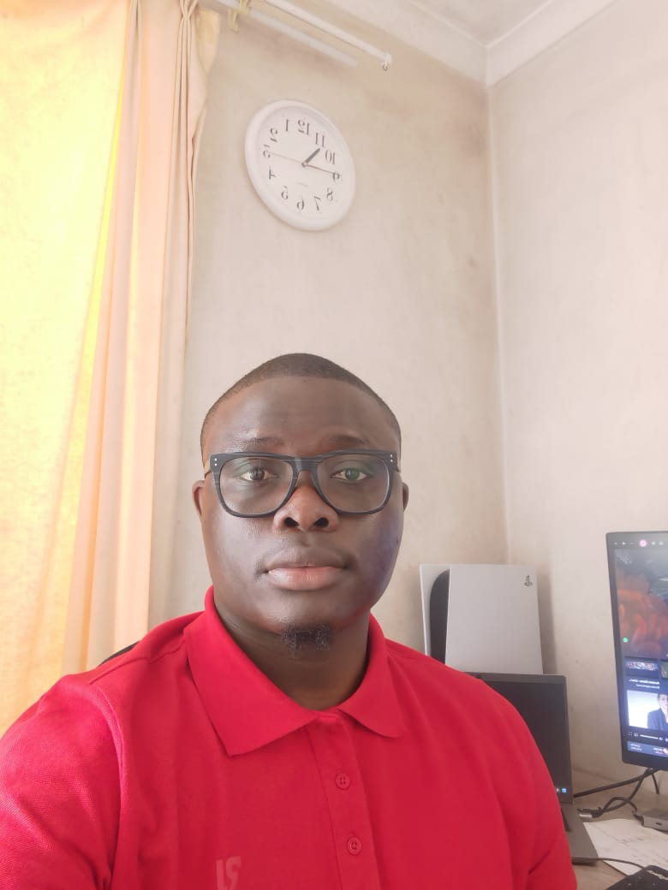

Evard Mabounda | WDD 130

Hello! My name is Evard Mabounda. I enjoy staying active and exploring the outdoors through cycling, which helps me stay healthy and clear my mind. In my free time, I also love playing video games, which lets me relax, have fun, and connect with others who share the same interests. Overall, I’m a balanced person who enjoys both adventure and creativity. I’m someone who values personal growth and always looks for opportunities to improve myself, whether it’s learning new skills or taking on exciting challenges. I enjoy discovering new places, trying out new hobbies, and expanding my knowledge whenever I can. I’m also passionate about staying positive and motivating those around me, because I believe that a good mindset can make a big difference in daily life. Whether I’m outdoors cycling, gaming with friends, or exploring something new, I try to make the most out of every experience and appreciate the journey along the way.